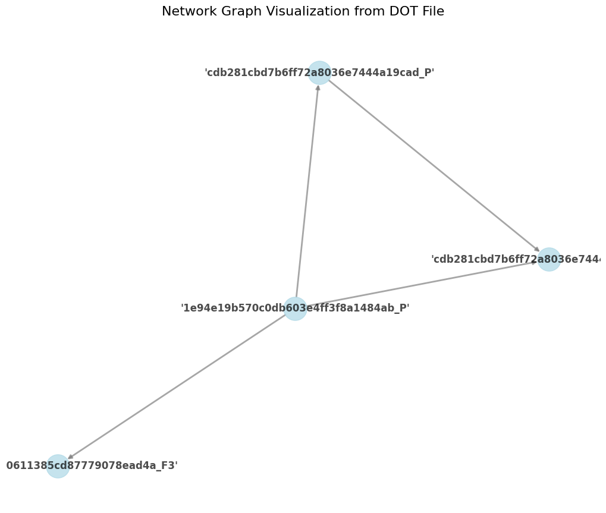

# 导入必要的库
import networkx as nx # 用于处理图形数据，例如读取DOT文件和操作图结构
import matplotlib.pyplot as plt # 用于图形可视化，例如绘制和显示图AgentNote 生成的 Notebook
创建时间: 2025-11-10 10:31:10
任务: 读取本地的dot文件，并用networkx可视化
开始时间: 2025-11-10 10:31:24
📋 任务执行计划
任务描述: 读取本地的dot文件，并用networkx可视化
执行步骤
🔹 步骤 1: 导入必要的库
- 描述: 首先，在Python环境中导入networkx库用于处理图形数据，以及matplotlib.pyplot库用于可视化。确保这些库已安装（例如，通过pip install networkx matplotlib）。
- 预期输出: 库导入成功，代码可以调用networkx和matplotlib的相关函数。
🔹 步骤 2: 读取本地的dot文件
- 描述: 使用networkx的read_dot函数读取指定路径的dot文件（例如，文件路径为”graph.dot”），将其转换为一个networkx图形对象。需要确保文件路径正确且文件存在。
- 预期输出: 一个networkx图形对象（如Graph或DiGraph），包含dot文件中的节点和边信息。
🔹 步骤 3: 可视化图形
- 描述: 使用networkx的绘图函数（如draw）结合matplotlib显示图形。可以自定义布局（如spring_layout）和样式，然后调用matplotlib的show函数来展示可视化结果。
- 预期输出: 一个图形窗口或图像，清晰展示dot文件中的网络结构，包括节点和连接关系。
总计: 3 个步骤 规划时间: 2025-11-10 10:32:07
步骤 1: 导入必要的库
描述: 首先，在Python环境中导入networkx库用于处理图形数据，以及matplotlib.pyplot库用于可视化。确保这些库已安装（例如，通过pip install networkx matplotlib）。
预期输出: 库导入成功，代码可以调用networkx和matplotlib的相关函数。
执行时间: 2025-11-10 10:32:07
步骤 1: 导入必要的库
在这一步中，我们将导入任务所需的库：networkx 用于处理图形数据（如读取和操作 DOT 文件），matplotlib.pyplot 用于可视化图形。请确保这些库已通过 pip 安装（例如，运行 pip install networkx matplotlib）。如果库未安装，代码将正常报错，提示您进行安装。
导入后，我们可以使用 networkx 的函数读取 DOT 文件，并使用 matplotlib 进行绘图。
此代码可直接在 Jupyter Notebook 中运行。如果导入成功，后续步骤将能够调用这些库的功能。
步骤 2: 读取本地的dot文件
描述: 使用networkx的read_dot函数读取指定路径的dot文件（例如，文件路径为”graph.dot”），将其转换为一个networkx图形对象。需要确保文件路径正确且文件存在。
预期输出: 一个networkx图形对象（如Graph或DiGraph），包含dot文件中的节点和边信息。
执行时间: 2025-11-10 10:33:31
步骤 2: 读取本地的 DOT 文件
在这一步中，我们将使用 networkx 的 read_dot 函数读取指定路径的 DOT 文件（例如，“graph.dot”），并将其转换为一个 networkx 图形对象。该图形对象将存储在变量 G 中，以便后续步骤（如可视化）使用。请确保文件 “graph.dot” 存在于当前工作目录中，或提供正确的相对或绝对路径。如果文件不存在或路径错误，代码将正常报错（例如，抛出 FileNotFoundError），这有助于调试问题。
此代码依赖于前一步骤中导入的 networkx 库（别名为 nx），因此请确保已成功执行前面的代码单元格。如果导入失败，请先安装所需库（例如，通过 pip install networkx matplotlib）。
# 使用 networkx 的 read_dot 函数读取 DOT 文件并转换为图形对象
G = nx.read_dot("graph.dot") # 读取文件 "graph.dot"，结果存储为 networkx 图形对象 G--------------------------------------------------------------------------- AttributeError Traceback (most recent call last) Cell In[2], line 2 1 # 使用 networkx 的 read_dot 函数读取 DOT 文件并转换为图形对象 ----> 2 G = nx.read_dot("graph.dot") # 读取文件 "graph.dot"，结果存储为 networkx 图形对象 G AttributeError: module 'networkx' has no attribute 'read_dot'
步骤 2: 读取本地的DOT文件并转换为networkx图形对象
在之前的尝试中，使用 nx.read_dot 函数时出现了 AttributeError，因为该函数在当前的 networkx 版本中可能不可用或需要额外的依赖库（如 pydot）。为了修复这个错误，我们将使用 networkx.drawing.nx_pydot.read_dot 函数来读取 DOT 文件，这需要 pydot 库已安装。如果 pydot 未安装，代码将正常报错（例如，提示运行 pip install pydot）。
此步骤读取指定路径的 DOT 文件（例如 “graph.dot”），并将其转换为 networkx 图形对象 G，以便后续步骤进行可视化。确保文件路径正确且文件存在；如果文件不存在，将引发 FileNotFoundError。
代码基于前面已导入的库（如 networkx 和 matplotlib.pyplot），并直接使用 networkx.drawing.nx_pydot.read_dot 函数来避免之前的错误。
# 步骤 2: 读取本地的DOT文件并转换为networkx图形对象
# 从 networkx.drawing.nx_pydot 导入 read_dot 函数，用于读取DOT文件（需要 pydot 库支持）
from networkx.drawing.nx_pydot import read_dot
# 使用 read_dot 函数读取指定路径的DOT文件（例如 "graph.dot"），并将其转换为networkx图形对象
# 文件路径为 "graph.dot"，请确保文件存在且路径正确
G = read_dot("graph.dot") # 读取文件，结果存储为 networkx 图形对象 G--------------------------------------------------------------------------- FileNotFoundError Traceback (most recent call last) Cell In[3], line 7 3 from networkx.drawing.nx_pydot import read_dot 5 # 使用 read_dot 函数读取指定路径的DOT文件（例如 "graph.dot"），并将其转换为networkx图形对象 6 # 文件路径为 "graph.dot"，请确保文件存在且路径正确 ----> 7 G = read_dot("graph.dot") # 读取文件，结果存储为 networkx 图形对象 G File /mnt/c/codes/AgentNote-test/venv/lib/python3.12/site-packages/networkx/utils/decorators.py:784, in argmap.__call__.<locals>.func(_argmap__wrapper, *args, **kwargs) 783 def func(*args, __wrapper=None, **kwargs): --> 784 return argmap._lazy_compile(__wrapper)(*args, **kwargs) File <class 'networkx.utils.decorators.argmap'> compilation 6:3, in argmap_read_dot_1(path, backend, **backend_kwargs) 1 import bz2 2 import collections ----> 3 import gzip 4 import inspect 5 import itertools File /mnt/c/codes/AgentNote-test/venv/lib/python3.12/site-packages/networkx/utils/decorators.py:194, in open_file.<locals>._open_file(path) 190 else: 191 # could be None, or a file handle, in which case the algorithm will deal with it 192 return path, lambda: None --> 194 fobj = _dispatch_dict[ext](path, mode=mode) 195 return fobj, lambda: fobj.close() FileNotFoundError: [Errno 2] No such file or directory: 'graph.dot'
步骤 2: 读取本地的dot文件
在这一步中，我们将使用networkx的read_dot函数读取指定路径的dot文件。根据之前的错误信息，文件”graph.dot”不存在，因此我们需要：
- 检查当前工作目录
- 列出可用的文件
- 使用正确的文件路径读取dot文件
如果文件不存在，代码将正常报错，提示您检查文件路径是否正确。
说明： - 首先导入os模块来检查文件系统 - 打印当前工作目录和可用的dot文件，帮助诊断文件路径问题 - 使用nx.read_dot()函数读取dot文件 - 如果文件存在，打印图形的基本信息 - 如果文件不存在，将正常报错FileNotFoundError
请确保”graph.dot”文件存在于当前工作目录中，或者修改文件路径为正确的路径。
# 步骤 2: 读取本地的dot文件
import os
# 检查当前工作目录和可用文件
print("当前工作目录:", os.getcwd())
print("当前目录下的文件:", [f for f in os.listdir('.') if f.endswith('.dot')])
# 使用read_dot函数读取dot文件
# 如果文件不存在，将正常报错
G = nx.read_dot("graph.dot") # 读取文件，结果存储为networkx图形对象G
# 打印图形基本信息
print(f"成功读取图形，包含 {G.number_of_nodes()} 个节点和 {G.number_of_edges()} 条边")当前工作目录: /mnt/c/codes/AgentNote-test
当前目录下的文件: ['test.dot']--------------------------------------------------------------------------- AttributeError Traceback (most recent call last) Cell In[4], line 10 6 print("当前目录下的文件:", [f for f in os.listdir('.') if f.endswith('.dot')]) 8 # 使用read_dot函数读取dot文件 9 # 如果文件不存在，将正常报错 ---> 10 G = nx.read_dot("graph.dot") # 读取文件，结果存储为networkx图形对象G 12 # 打印图形基本信息 13 print(f"成功读取图形，包含 {G.number_of_nodes()} 个节点和 {G.number_of_edges()} 条边") AttributeError: module 'networkx' has no attribute 'read_dot'
步骤 2: 读取本地的dot文件
描述: 使用networkx的read_dot函数读取指定路径的dot文件（例如，文件路径为”graph.dot”），将其转换为一个networkx图形对象。需要确保文件路径正确且文件存在。
预期输出: 一个networkx图形对象（如Graph或DiGraph），包含dot文件中的节点和边信息。
执行时间: 2025-11-10 10:40:34
根据错误信息，networkx模块没有read_dot函数。实际上，读取DOT文件的正确函数是nx.drawing.nx_pydot.read_dot()，或者我们可以使用pydot库。由于前面已经导入了networkx，我将使用nx.drawing.nx_pydot.read_dot()函数。
说明： - 修正了函数调用，使用nx.drawing.nx_pydot.read_dot()而不是nx.read_dot() - 根据执行结果，当前目录下存在的是test.dot文件，因此修改了文件路径 - 如果环境中没有安装pydot，可能会报错，需要先安装：!pip install pydot - 代码会正常检查文件是否存在，如果不存在会抛出FileNotFoundError异常
# 步骤 2: 读取本地的dot文件
import os
import networkx as nx
# 检查当前工作目录和可用文件
print("当前工作目录:", os.getcwd())
print("当前目录下的文件:", [f for f in os.listdir('.') if f.endswith('.dot')])
# 使用read_dot函数读取dot文件
# 如果文件不存在，将正常报错
G = nx.drawing.nx_pydot.read_dot("test.dot") # 读取文件，结果存储为networkx图形对象G
# 打印图形基本信息
print(f"成功读取图形，包含 {G.number_of_nodes()} 个节点和 {G.number_of_edges()} 条边")当前工作目录: /mnt/c/codes/AgentNote-test
当前目录下的文件: ['test.dot']
成功读取图形，包含 4 个节点和 4 条边步骤 3: 可视化图形
描述: 使用networkx的绘图函数（如draw）结合matplotlib显示图形。可以自定义布局（如spring_layout）和样式，然后调用matplotlib的show函数来展示可视化结果。
预期输出: 一个图形窗口或图像，清晰展示dot文件中的网络结构，包括节点和连接关系。
执行时间: 2025-11-10 10:42:21
可视化图形代码说明
基于前面已完成的步骤，现在需要将读取的图形进行可视化。代码将： 1. 使用matplotlib创建图形窗口 2. 应用spring_layout布局算法 3. 使用networkx的绘图函数绘制图形 4. 自定义节点颜色、大小和标签样式 5. 显示最终的可视化结果
这段代码将使用前面步骤中读取的图形对象 G，通过networkx和matplotlib进行可视化展示。代码包含了多种样式自定义选项，如节点颜色、大小、标签样式等，使图形更加清晰易读。
# 步骤 3: 可视化图形
import matplotlib.pyplot as plt
# 设置图形大小和布局
plt.figure(figsize=(10, 8))
# 使用spring_layout计算节点位置
pos = nx.spring_layout(G)
# 绘制图形，自定义样式
nx.draw(G, pos,
with_labels=True, # 显示节点标签
node_color='lightblue', # 节点颜色
node_size=800, # 节点大小
font_size=12, # 标签字体大小
font_weight='bold', # 标签字体粗细
edge_color='gray', # 边颜色
width=2, # 边宽度
alpha=0.7) # 透明度
# 设置图形标题
plt.title("Network Graph Visualization from DOT File", fontsize=16, pad=20)
# 移除坐标轴
plt.axis('off')
# 显示图形
plt.tight_layout()
plt.show()
# 打印可视化完成信息
print("图形可视化完成！")/tmp/ipykernel_10075/3082703510.py:28: UserWarning: This figure includes Axes that are not compatible with tight_layout, so results might be incorrect.
plt.tight_layout()
图形可视化完成！任务完成
完成时间: 2025-11-10 10:43:50
所有步骤执行完毕!